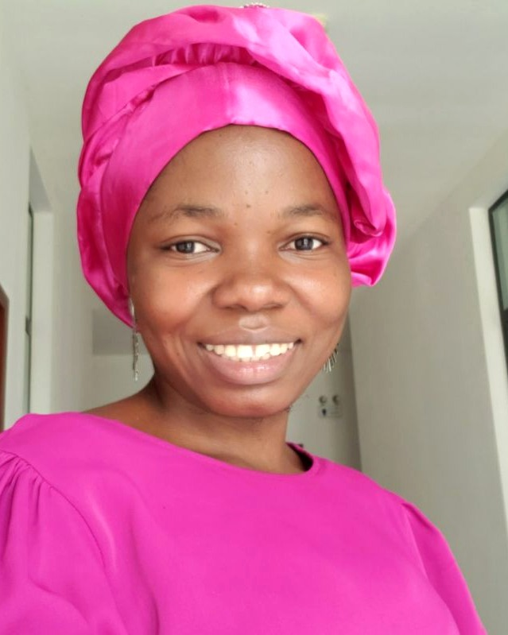

I research how large-scale systems can move money faster, more efficiently and more securely — where rigorous optimization meets real financial infrastructure.

I am a computer scientist completing a PhD at the University of Yaoundé I, where my research designs optimization methods for interorganizational business processes — with a focus on payment systems. My doctoral work produced CostGA, an evolutionary-algorithm optimizer that reduces the time to settle large transaction batches by two-thirds.
Alongside research, I have spent six years building and running real systems — as IT Manager of a university, as a lecturer to hundreds of students, and as a certified ISO 8583 Lead Auditor and ISO/IEC 27001 Lead Implementer. I work at the point where scientific rigor meets operational reality: secure, efficient, large-scale digital and financial infrastructure.
My ambition is to bring applied research into the institutions shaping Africa's financial future — combining optimization, security and a deep understanding of how payment systems actually run.
Designing heuristic models that make interorganizational payment processes faster, cheaper and more secure at scale.
My doctoral research addresses how computational and network resources can be optimized in high-demand environments while preserving strict security and reliability constraints. I proposed an optimization model and implemented it as CostGA, an evolutionary-algorithm optimizer written in C, evaluated on large-scale inter-operator transaction settlement.
Two certifications that anchor the research in the real standards behind financial infrastructure.
Available for applied-research roles, fintech and institutional programmes — based in Yaoundé, open to relocation and remote collaboration.